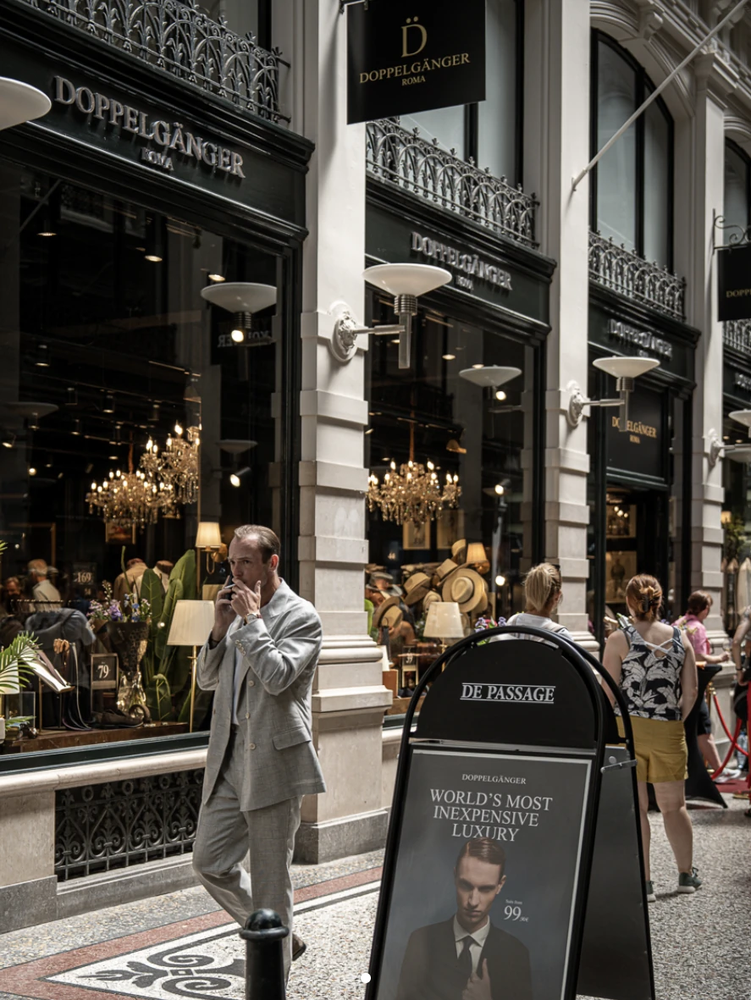
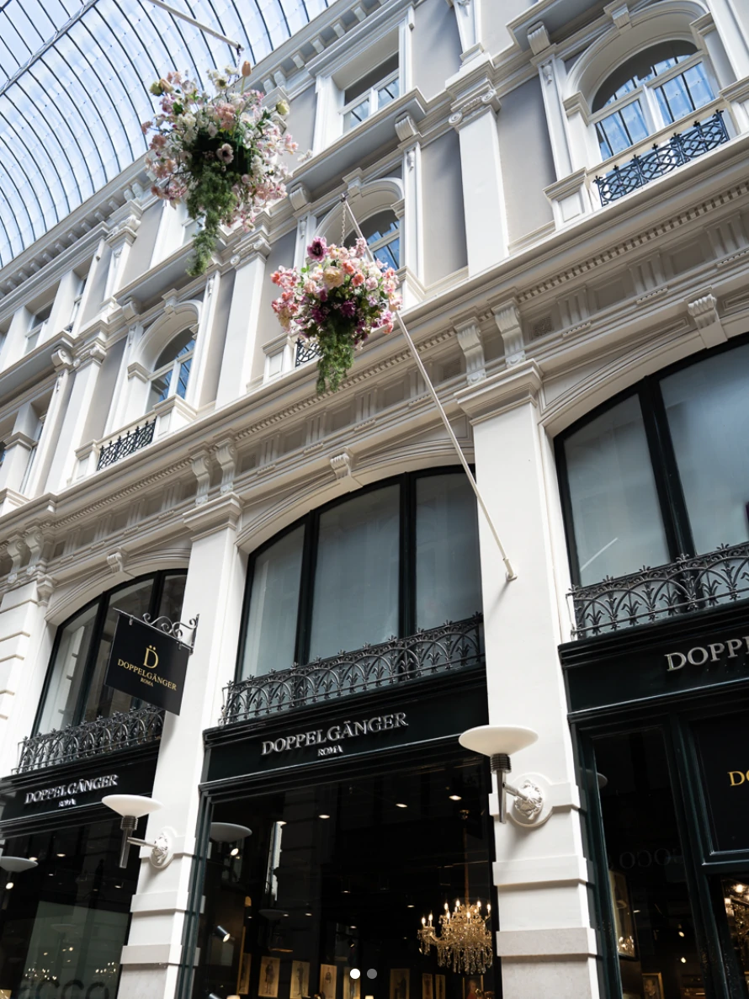
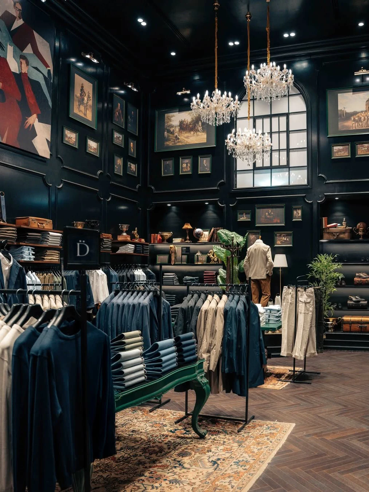

Siamo lieti di annunciare l'apertura della nostra nuova boutique a Den Haag, un ulteriore passo nella crescita internazionale del brand. Situata in Passage 52, la nuova boutique è stata progettata per offrire un ambiente che unisce stile italiano, accessibilità e un'esperienza d'acquisto distintiva.
Nuova Apertura, Den Haag


Il weekend di apertura, in programma il 20 e 21 giugno, accoglierà clienti e ospiti con un evento dedicato per celebrare l'arrivo di Doppelgänger in una delle città più vivaci dei Paesi Bassi.

Desideriamo ringraziare tutti i team e i partner coinvolti nella realizzazione di questo progetto.
📍 Passage 52, Den Haag